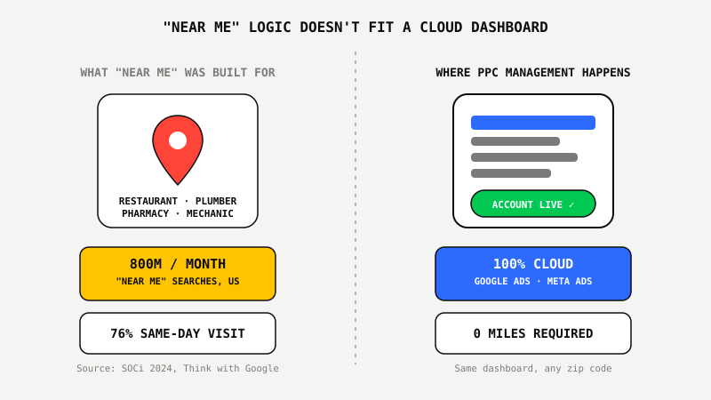
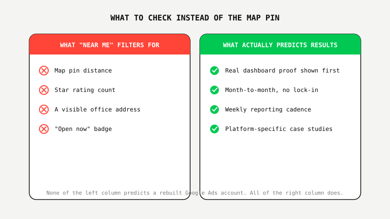

Why "PPC Agency Near Me" Is The Wrong Way To Search For One

Key Takeaways
- "Near me" search behavior is built for immediate, in-person decisions. Roughly 800 million searches a month in the US use some variation of "near me" (SOCi, 2024), and Google's own data shows 76% of local mobile "near me" searches lead to a same-day store visit. Hiring a PPC agency isn't one of those decisions.
- Your entire Google Ads and Meta Ads account lives inside a cloud dashboard, accessible from anywhere. Campaign structure, bid strategy, and creative testing look identical whether the person doing the work sits in your zip code or across the country.
- Distributed agencies already prove this at scale. Coalition Technologies has run a fully remote, distributed team since it was founded and still delivers results for clients across North America, not by being nearby, but by being good at the work.
- GoViral runs the identical Google Ads Proof Program™ for businesses in Salt Lake City, Atlanta, and Houston, plus clients nationwide. Real results, $22.9M revenue at 632% ROAS and $10.8M at 1,345% ROAS, came from account structure and tracking, not proximity to the client.
Remember When You Needed Your Travel Agent's Office To Be Close By?
There was a time when booking a flight meant walking into an office. You sat across a desk, the agent flipped through a binder or squinted at a terminal, and physical distance mattered because the entire transaction happened in that room. Choosing a travel agent by which one was closest wasn't a compromise. It was the only option.
Then the whole industry moved onto a screen. Booking a flight today has nothing to do with geography. Nobody searches "travel agent near me" and expects the results to matter, because proximity stopped being the thing that determined quality decades ago.
PPC management made the same jump. The work happens entirely inside Google Ads and Meta Ads dashboards that you can log into from any browser on the planet. But the search habit never caught up. People still type "PPC agency near me" out of a reflex built for a different kind of business, one where someone has to physically show up.
What "Near Me" Search Behavior Was Actually Built For
"Near me" exists to answer one question: what's physically closest to me right now. That's exactly what the data shows it's used for. There are roughly 800 million searches a month in the US using some variation of "near me" (SOCi, 2024), and according to Google's own research, 76% of local mobile "near me" searches result in a same-day visit to a physical location, with 88% of people who run a local search on their phone engaging with a business within 24 hours.
Every one of those numbers describes a person deciding where to physically go: which restaurant to walk into, which pharmacy is still open, which mechanic can look at the car today. That's a real and useful search pattern. It's just built for a completely different kind of decision than choosing who manages your Google Ads account.

Where PPC Management Actually Happens
Nowhere near you, and that's the point. Your campaigns, keyword lists, bid strategies, audience targeting, and conversion tracking all live inside Google Ads Manager and Meta Ads Manager, cloud platforms built to be accessed remotely from day one. The agency managing your account could be in the same building or two time zones away, and the account structure, the negative keyword lists, the pixel setup, none of it changes based on where the person clicking around in the dashboard happens to be sitting.
Some of the most established performance agencies in the industry are built entirely around this fact. Coalition Technologies has run a fully remote, distributed team since it was founded and still delivers results for clients across North America. Distance was never the variable separating a good PPC agency from a bad one. Account structure, tracking accuracy, and how fast someone actually reacts to a search-term report were.
GoViral Runs The Same Playbook Everywhere
We manage Google Ads for businesses across Utah, Georgia, and Texas, plus clients nationwide, and it's the identical Google Ads Proof Program™ every time: the same audit, the same account rebuild process, the same weekly optimization cadence. Your location doesn't change how we build or run your account, because the work was never location-dependent to begin with.
The results on our dashboard pages come from that same process, run for businesses we've never met in person. $22.9M in revenue at 632% ROAS after rebuilding AI signals. $10.8M at 1,345% ROAS, scaled without destroying profitability. $6.43M at 1,375% ROAS with each conversion costing just $51.12. 195 qualified leads in 60 days for a lead-gen account. None of those numbers required us to be down the street.

What To Actually Search For Instead
Replace the map pin with proof. Ask to see a real dashboard, not a template, with actual revenue and ROAS numbers attached. Ask whether the agreement is month-to-month or locks you in for six months before you've seen a single result. Ask how often you'll get a report and a strategy call, weekly should be the floor. Ask for case studies inside your specific platform, Google Ads results if that's what you're hiring for, not a generic "we do marketing" portfolio.
None of that shows up on a map. All of it shows up in a first conversation, which is exactly why we built the Google Ads Proof Program™ around seeing results before paying agency-level fees, rather than around having an office you could drive to.
Stop searching by map pin. See a real account audit instead.
See The $800 Google Ads Proof Program™ ↗